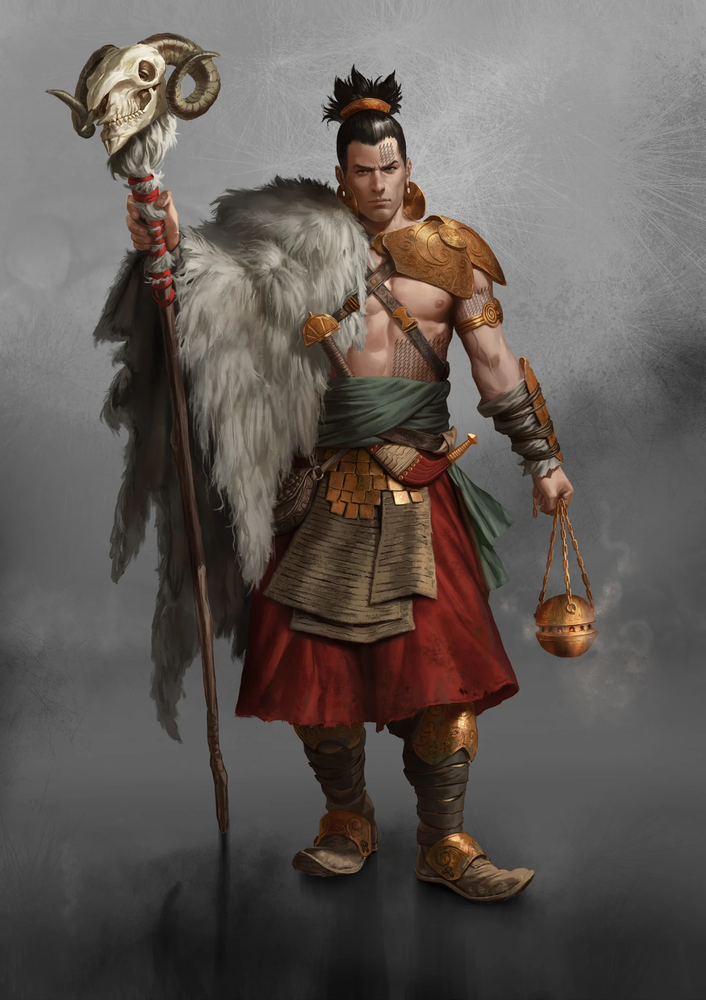

Leaders
- Prophets
- Gileabod Ruben Abraham
- Unnamed Prophets
- Oracles
- Red Judith
- Unnamed Oracles
CULT DOSSIER
Carriers of God's Countenance
+1 to maximum skill level

THE COVENANT
The Jehammedans believe that Jehammed was the last prophet and that humanity survives beneath a covenant with God. Family, faith, sacrifice, and obedience form the foundations of their society. Every person is born into a web of duties extending backward through their ancestors and forward through children not yet born.
A Jehammedan is rarely taught to ask what life should provide for them. The more important question is what they owe to the family. Herds must be tended, children raised, enemies fought, traditions preserved, and sacrifices made so that the line continues.
This order creates fierce loyalty and communities capable of surviving centuries of war and migration. It also determines much of a person's life before they are old enough to understand what has been chosen for them.
Jehammed appeared at the Kaaba in Mecca before the Eshaton, proclaiming that God would punish humanity for its faithlessness. His followers believed the destruction that followed confirmed his revelation.
Families who preserved the faith survived the dark years together. They mastered husbandry and crafts, cared for one another, forged weapons from Bygone remains, and gradually spread through the Balkhan, Borca, and Hybrispania.
Bucharest became the new spiritual center of the Cult, while Osman grew into its great stronghold in East Borca. Mecca remains sacred but distant, holding texts said to contain Jehammed's final teachings and perhaps answers concerning the Eshaton itself.
The old prophet taught movement, humility, family, and the shepherd's life. Centuries later, many Jehammedans have settled in cities and fortified territories, but the ideal of the wandering flock remains deeply embedded in their faith.
Jehammedan teachings divide humanity symbolically between the shepherd and the fisherman.
The shepherd accepts the natural order established by God. He tends his flock, provides for his family, fulfills his obligations, and endures hardship without abandoning his place. Life is understood as a succession of trials demanding sacrifice rather than personal happiness.
The fisherman represents those who have removed themselves from that order. Misfortune is interpreted not as supernatural punishment but as the consequence of abandoning the path. Outsiders are therefore often described as fishermen's children: people who may still be guided back toward the flock, but whose customs are regarded with suspicion.
This distinction shapes how Jehammedans view almost every other Cult.
Family structure lies at the heart of Jehammedan society. Most boys born to an Abrami and Hagari become Ismaelis. They herd animals, fetch water, guard tents, perform hard labor, and occupy the lowest male position within the family.
An Ismaeli earns the right to create a household only after proving himself, often by becoming a Sword of Jehammed and surviving battle. A successful warrior may become an Abrami, taking responsibility for a family of his own.
Hagaris perform much of the work that keeps the household alive. They cook, mend clothing, tend animals, heal, raise children, and support the family in war as well as peace. Their importance is openly acknowledged even while tradition places them under male authority.
Jehammedan society therefore speaks constantly of honor and family while assigning sharply unequal burdens within it.
A Saraeli occupies a very different position. Chosen for ritual purity, she is treated as a vessel through which God may bless the family. She receives fine clothing, attention, protection, and considerable status within the household.
Once each year, the Abrami shares her bed. If she bears a son, that child is an Isaaki.
Isaakis are considered blessed sacrifices. They receive the family's finest food, education, horses, weapons training, and instruction from an early age. Where an Ismaeli learns humility through labor, an Isaaki is prepared to become an example of faith.
That privilege comes with a terrible expectation. Isaakis ride at the front of battles, offering their lives to God. Many die young. Those who repeatedly survive are considered especially blessed and may eventually become Iconides.
Iconides are spiritual leaders, judges, interpreters, and executioners. They determine religious practice, settle disputes, identify Saraelis, guide communities, and interpret signs believed to reveal God's intentions.
Their distinctive practice centers upon Icons: symbolic objects used during prolonged meditation and ritual bargaining with God. An Icon may embody a desired punishment, protection, return, victory, or warning. The Iconide recounts sacrifices already made and waits for events to reveal whether the bargain has been accepted.
Those whose insight becomes particularly revered may become Prophets.
Jehammedan authority is therefore not divided cleanly between religion and government. To the faithful, family law, spiritual law, and social order are parts of the same covenant.
Jehammedan tradition is restrictive, but its own teachings create paths through which women can gain unusual independence and authority.
A Hagari who masters Jehammed's writings may become a Voice of Jehammed. Her knowledge gives her the ability to challenge an Abrami using the prophet's own words. With enough learning and respect, she may become a Righteous One whose interpretation carries weight even with Iconides.
Saraelis whose expected destiny changes may follow other paths. Immaculates, freed from the obligation of producing an Isaaki, can travel, heal, study, or mediate between communities. Exceptionally respected women may become Iconesses and eventually Oracles.
Others fall outside accepted society entirely. Delilahs seek redemption through battle, while Maculates may leave the family structure behind and attempt to build new lives elsewhere.
The Cult's rules are rigid, but centuries of interpretation have created cracks through which remarkable individuals can emerge.
Jehammedans carry their history upon their skin. Life Rings are tattooed gradually across the body, recording sacrifice, hardship, achievement, joy, and deprivation rather than simply age.
Each spring, families gather for Bairam. Over seven days, members recount the events of the previous year, and the Iconides determine how the tattoo patterns should grow.
A heavily marked young warrior may therefore carry visible evidence of extraordinary hardship, while an elder whose skin remains comparatively bare may invite questions about what little they have endured or accomplished.
The body becomes a family chronicle that cannot easily be rewritten.
Few conflicts have shaped the Jehammedans as deeply as their war with the Anabaptists. Both peoples claimed the fertile Adriatic lands, one seeing farmland and the other pasture granted by God.
The resulting wars became atrocities remembered by generations on both sides. Jehammedans were driven back, returned under the leadership of Aries, and eventually fought the Anabaptists into a bloody stalemate across the Adriatic.
Centuries of raids, reprisals, massacres, and sacred hatred followed. Exhaustion has cooled some of that fury, and individual Jehammedans may now recognize a shared devotion and stubbornness in their old enemies, but memory remains dangerous.
Aries entered Jehammedan history as a mysterious warrior who appeared when the Cult faced disaster against the Anabaptists. His victories transformed him into a legendary figure, and signs associated with the Ram became increasingly common within popular faith.
Traditional Iconides see danger in this devotion. Miracles once attributed to God are now credited to Aries, and some Jehammedans follow the Ram with greater passion than they follow Jehammed.
These Arianoi represent an internal challenge unlike the Cult's external enemies. They promise strength, revelation, and a more aggressive path into the world. Their followers may become the Blood of Aries and, ultimately, Fatums who act as heralds and killers.
Not every Jehammedan considers them heretics. That uncertainty makes the movement more dangerous to the traditional order.
Jehammedans offer belonging, continuity, faith, and protection in a world where families are routinely destroyed. Their communities can survive migration, war, hunger, and persecution because everyone understands that personal comfort is secondary to the survival of the whole.
Yet sacrifice is rarely distributed equally. An Ismaeli may labor so an Isaaki can be glorified. A Hagari may sustain an entire household while another woman is treated as sacred. An Isaaki may possess every privilege imaginable while knowing those privileges exist because he is expected to die.
Faith can make those burdens meaningful, but it does not make them light.
Every Jehammedan must eventually decide what loyalty to the family truly requires: obedience to the place tradition assigned them, reinterpretation of Jehammed's words, or the courage to believe that God's path may lead somewhere their ancestors never expected.
THE FAMILY & THE FAITH
The Jehammedan hierarchy follows several paths of birth, family, spiritual authority, and devotion to Aries. Select any rank to read its complete entry.
FAITH & SACRIFICE
COVENANT RELICS
Open or close each equipment group to focus the reference.